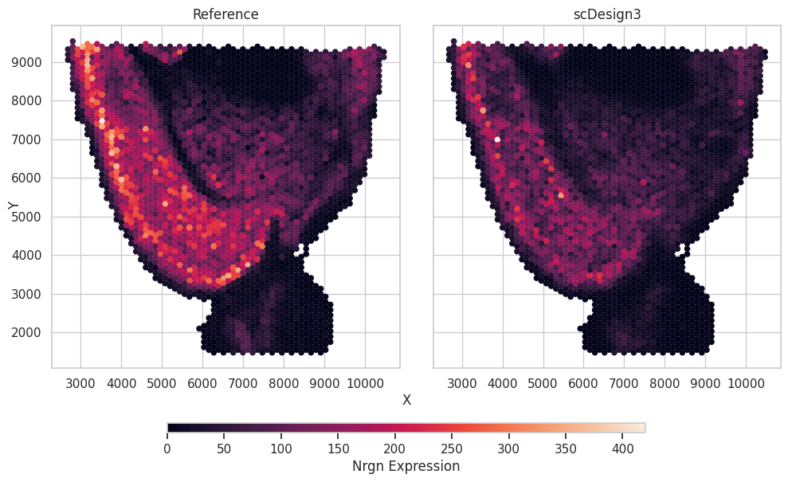

Simulate spatial transcriptomic data
Introduction
In this example, we show how to use pyscDesign3 to simulate the single-cell spatial data.
Import packages and Read in data
import pacakges
import anndata as ad
import numpy as np
import pandas as pd
import pyscDesign3
The R project used is located at /root/anaconda3/envs/pyscdesign/lib/R
Read in the reference data
The raw data is from the Seurat, which is a dataset generated with the Visium technology from 10x Genomics. We pre-select the top spatial variable genes. To save time, we only use the top 10 genes.
data = ad.read_h5ad("data/VISIUM.h5ad")
data = data[:,0:10]
data
View of AnnData object with n_obs × n_vars = 2696 × 10
obs: 'nCount_Spatial', 'nFeature_Spatial', 'nCount_SCT', 'nFeature_SCT', 'SCT_snn_res.0.8', 'seurat_clusters', 'spatial1', 'spatial2', 'cell_type'
var: 'name'
Simulation
Then, we can use this spatial dataset to generate new data by setting the parameter mu_formula as a smooth terms for the spatial coordinates.
test = pyscDesign3.scDesign3(n_cores=6,parallelization="pbmcmapply")
test.set_r_random_seed(123)
simu_res = test.scdesign3(
anndata = data,
default_assay_name = "counts",
celltype = "cell_type",
spatial = ["spatial1", "spatial2"],
mu_formula = "s(spatial1, spatial2, bs = 'gp', k= 400)",
sigma_formula = "1",
family_use = "nb",
usebam = True,
corr_formula = "1",
copula = "gaussian",
)
Then we can construct new data using the simulated count matrix.
simu_data = ad.AnnData(X=simu_res["new_count"], obs=simu_res["new_covariate"])
simu_data.layers["log_transformed"] = np.log1p(simu_data.X)
Visualization
We plot a selected gene as an example showing the gene expression and the spatial locations.
import matplotlib.pyplot as plt
import seaborn as sns
Show code cell source
gene_name = "Nrgn"
df = pd.concat([data.obs[["spatial1","spatial2"]],simu_data.obs[["spatial1","spatial2"]]],axis=0)
df["Expression"] = np.concatenate([data[:,gene_name].X.toarray().flatten(),simu_data[:,gene_name].X.toarray().flatten()])
df["Method"] = ["Reference"]*data.n_obs + ["scDesign3"]*simu_data.n_obs
# plot
sns.set(style="whitegrid")
methods = df.groupby("Method")
fig, axes = plt.subplots(1, len(methods), figsize=(len(methods) * 5, 1 * 5), sharey=True, sharex=True)
fig.tight_layout()
for i, (method, exp) in enumerate(methods):
ax = axes[i]
scatter = ax.scatter(
exp["spatial1"],
exp["spatial2"],
c=exp["Expression"],
alpha=1,
s=20,
)
ax.set_title(method)
fig.text(0.5, 0, "X", ha="center")
fig.text(0, 0.5, "Y", va="center", rotation="vertical")
position = fig.add_axes([0.2, -0.07, 0.60, 0.025])
fig.colorbar(scatter, cax=position,
orientation="horizontal",
label=f"{gene_name} Expression",)
fig.show()
